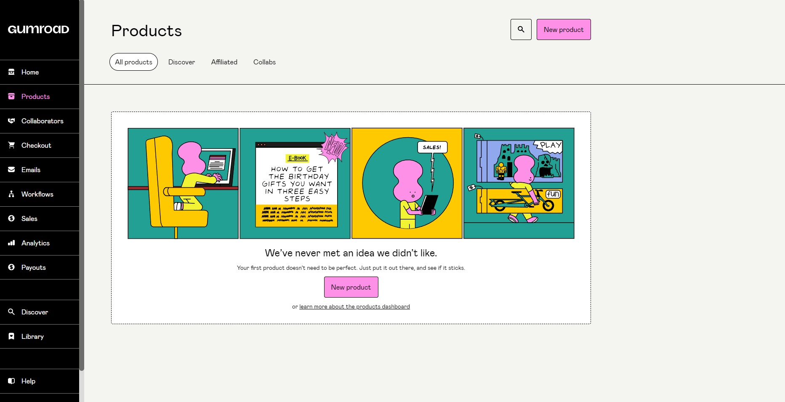

MacWhisper
MacWhisper - бесплатное приложение для Mac. Вы выбираете язык, перетаскиваете туда файл и получаете полную расшифровку в двух форматах: с таймкодами и без, сплошным текстом.
Программа работает полностью в оффлайне. В списке поддерживаемых языков есть практически все существующие в мире.
